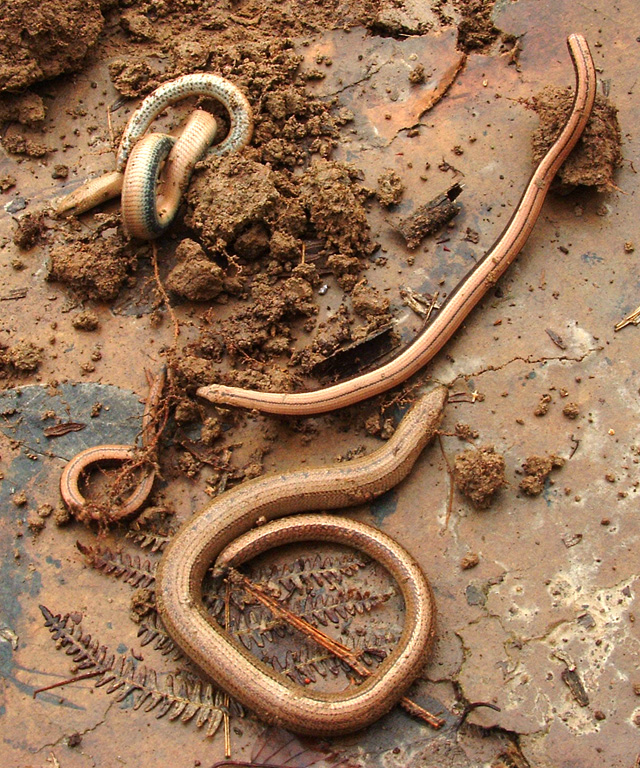

I found some little snakey things when I was digging. They were kind of creepy, and Pete wouldn't touch them. One of them got cut in half by the spade which was sad, but I managed to save the others. The one that was cut in half lay really still, but the other bit was wriggling around a lot. I took some videos: 1 | 2
